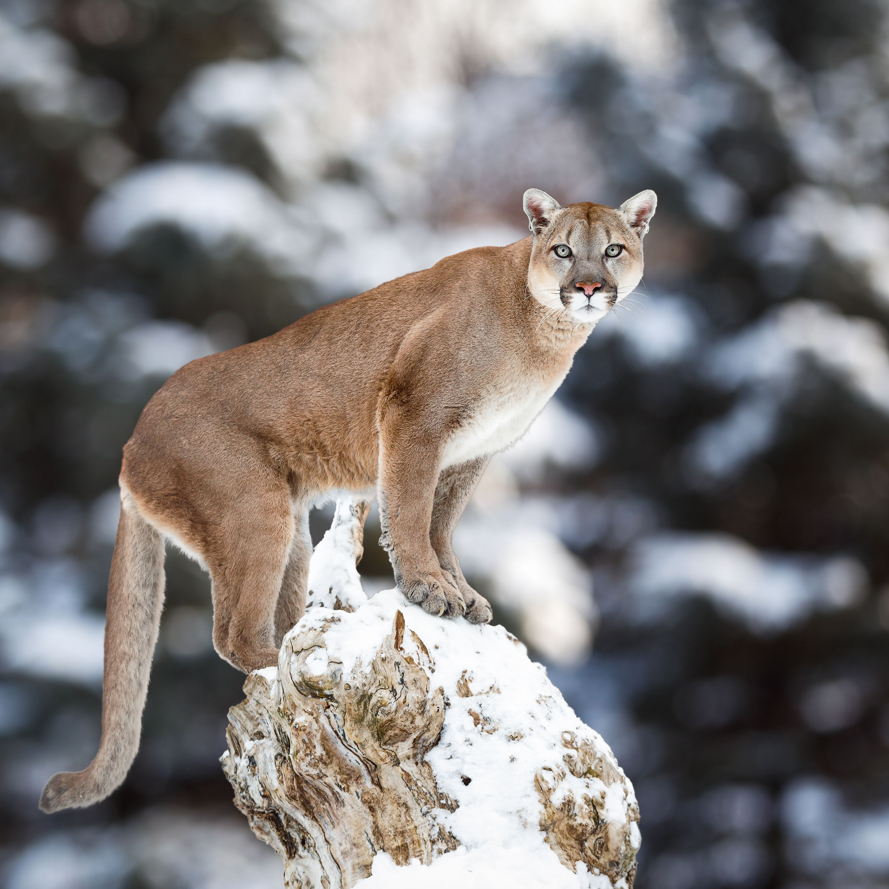
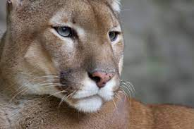

El puma, león de montaña o león americano (Nombre científico: Puma concolor) es un mamífero carnívoro de la familia Felidae nativo de América. Este felino vive en más lugares que cualquier otro mamífero silvestre terrestre del continente, ya que se extiende desde el Yukón, en Canadá, hasta el sur de la cordillera de los Andes y la Patagonia en América del Sur. El puma es adaptable y generalista, por lo que vive en los principales biomas de toda América. Es el segundo mayor felino en el continente americano, después del jaguar, y el cuarto más grande del mundo, después del tigre, y el león. Su tamaño es algo mayor que el del leopardo, aunque está más emparentado con los pequeños felinos, ya que, a diferencia de los grandes félidos del género Panthera, que pueden rugir excepto el irbis, el puma ronronea como los felinos menores. Como cazador y depredador de emboscada, el puma obtiene una amplia variedad de presas. Su principal alimento son los ungulados como el ciervo, en particular en la parte septentrional de su área de distribución, pero también caza camélidos como el guanaco y especies tan pequeñas como insectos y roedores. Prefiere hábitat con vegetación densa durante las horas de acecho, pero puede vivir en zonas abiertas. El puma es territorial y tiene una baja densidad de población. La extensión de su territorio depende de la vegetación y de la abundancia de presas. Aunque es un gran depredador, no siempre es la especie dominante en su área de distribución, como cuando compite con otros depredadores como el jaguar. Se trata de un felino solitario que por lo general evita a las personas. Los ataques a seres humanos son raros, aunque su frecuencia ha aumentado en los últimos años. El puma fue considerado una fiera peligrosa a partir de la colonización europea de América. Esta consideración y la progresiva ocupación humana de los hábitats del puma han hecho que sus poblaciones disminuyan en casi todos sus hábitats históricos. En particular, el puma fue extinguido en la parte oriental de América del Norte, con excepción del caso aislado de una subpoblación en la Florida. Se cree que este felino podría recolonizar parte de su antiguo territorio oriental. Con su amplia distribución geográfica, el puma tiene decenas de nombres y es mencionado con diversas referencias en la mitología de los pueblos aborígenes de América y también en la cultura contemporánea.
En idioma español el nombre usual es «puma», un préstamo del quechua. En zonas rurales de muchas partes de América, sin embargo, se le llama «león» por analogía con el león (si bien se diferencia de aquel en que esta especie no posee la característica melena). La gran cantidad de nombres con que se conoce al puma se explica por la enorme amplitud geográfica de su hábitat: el animal estuvo presente en casi todas las culturas precolombinas y cada una le asignó uno o varios nombres. En inglés, los nombres más populares son mountain lion (león de montaña), y cougar, palabra tomada de la portuguesa suçuarana, a través del francés, aunque el término originalmente deriva de la lengua tupí. En América del Norte, «pantera» se utiliza más a menudo cuando se refieren a la subpoblación llamada pantera de Florida. En náhuatl se le llama miztli, En maya se le llama koj, en chibcha se lo llama chihisaba, en mapuche (sur de Chile y la Argentina) se conoce como pangi a la hembra o a toda la especie y trapial al macho, y en Brasil suçuarana, de origen tupí, onça-parda, en distinción de la onça-pintada (jaguar), e inusualmente puma o leão-da-montanha. En guaraní se lo conoce como Jagua pytã,4que significa 'fiera colorada', pues el fenotipo de la subespecie presente en la geonemia de esta etnia presenta el pelaje con fuertes tonos rojizos, en distinción de jaguar o jaguareté (fiera de verdad) y de yaguá (fiera) que pasó a significar sólo 'perro' (actualmente se aplica este término en guaraní a cualquier perro).
El puma se ubica en la subfamilia Felinae, de los felinos pequeños, mientras que los grandes felinos son colocados dentro de la subfamilia Pantherinae. El origen de la familia Felidae en Asia se remonta a aproximadamente 11 millones de años atrás. Por desgracia, el conocimiento taxonómico de los felinos sigue siendo parcial y gran parte de lo que se conoce sobre su historia evolutiva se basa en el análisis del ADN mitocondrial; además, como los felinos están escasamente representados en el registro fósil,6 las fechas propuestas tienen un amplio intervalo de confianza. Según un reciente estudio de genomas de félidos, el ancestro común de los actuales Leopardus, Lynx, Puma, Prionailurus, y otros linajes Felinae emigró a través del puente del estrecho de Bering hacia América, aproximadamente hace 8 a 8,5 millones de años atrás. Posteriormente, los linajes divergieron.6 Los felinos de América del Norte invadieron luego a Sudamérica como parte del Gran Intercambio Americano, a raíz de la formación del istmo de Panamá. La conservación del puma depende de la preservación de su hábitat. Se creía que el puma pertenecía al género Felis, el cual incluye el gato doméstico, pero ahora se coloca en el género Puma junto con el jaguarundi (Puma yagouaroundi), un felino nativo de América, un poco más de una décima parte del peso de un puma. Los estudios han indicado que el puma y el jaguarundi se encuentran estrechamente relacionados con los modernos guepardos de África y Asia occidental,6 pero la relación no se ha resuelto. Se ha sugerido que el linaje de los guepardos se separó del de los pumas en América, y luego los primeros reemigraron a Asia y África,678 mientras que otros estudios sugieren los guepardos divergieron en el Viejo Mundo independientemente. El esquema de la migración de los pequeños felinos hacia América es, por lo tanto, poco claro. Estudios recientes han demostrado un alto grado de similitud genética entre las poblaciones de puma de América del Norte, lo que indica que todos ellos son descendientes bastante recientes de un pequeño grupo ancestral. Culver y colaboradores presumen que la población original de pumas de América del Norte se extinguió en el Pleistoceno alrededor de 10 000 años atrás, cuando otros grandes mamíferos, como el milodón, también desaparecieron. América del Norte habría sido repoblada por un grupo de pumas de América del Sur.
Los pumas son felinos esbeltos y ágiles. La talla adulta de pie es de alrededor de 70 a 90 cm de altura en los hombros. La longitud de los machos adultos es de alrededor de 2,7 m de largo de la nariz a punta de la cola, aunque en general oscila entre 2,0 y 2,5 . Sin contar la cola de 1,5 a 1,7 metros la cola mide de 0,7 a 1.0 m.242526 Los machos tienen un peso promedio de entre 60 a 85 kg. En casos de la Patagonia, la subespecie más grande, algunos pueden llegar a pesar de 100 a 120, el más grande encontrado pesaba 140 kilos. El peso promedio de las hembras está entre 40 y 62 kg.27 El tamaño del puma es más pequeño cerca del ecuador, y mayor en las poblaciones más cercanas a los polos. La cabeza del puma es redonda y las orejas están erguidas. Posee poderosas patas delanteras, cuello, mandíbula y colmillos que le sirven para atrapar y matar grandes presas. Tiene cinco garras retráctiles en las patas delanteras, útiles para aferrarse a la presa, y cuatro de las patas posteriores. El puma puede ser tan grande como el jaguar, pero menos robusto ya que el puma es esbelto . Donde las distribuciones se superponen, el número de pumas tiende a ser inferior a la media. El puma, en promedio, es más pesado que el leopardo. A pesar de su tamaño, no es normalmente clasificado entre los grandes felinos porque no puede rugir, ya que carecen de la laringe especializada y el hueso hioides del jaguar.Dado que los avistamientos de felinos grandes son más bien raros, la identificación de otro tipo de evidencias es importante. En América central y derivado de un estudio morfométrico, Aranda (1994) refiere que un indicador más o menos confiable es la relación entre la anchura superior y la anchura inferior de los dedos, observándose una tendencia a huellas con dedos más puntiagudos en los pumas, a diferencia de los jaguares. Al igual que los gatos domésticos, los pumas vocalizan silbidos agudos, gruñidos, ronroneos, así como gorgojeos. Son conocidos por sus gritos, como se hace referencia en algunos de sus nombres comunes, aunque éstos se confunden con frecuencia con llamadas de otros animales. La coloración del puma es uniforme (de ahí el nombre latino concolor), pero puede variar mucho entre los individuos e incluso entre hermanos. El pelaje es generalmente dorado, pero puede ser de color gris plateado o rojizo, con ligeros parches en el cuerpo, incluidas cerca de las mandíbulas, la barbilla y el cuello. Las crías nacen con ojos azules y anillos en la cola; los cachorros son más pálidos, y las manchas siguen en sus flancos. En contra de algunas afirmaciones, no se ha documentado la existencia de pumas completamente negros. El término «pantera negra» se usa coloquialmente para referirse a algunos individuos de otras especies, en particular jaguares y leopardos Los pumas tienen grandes patas; proporcionalmente las mayores patas traseras en la familia de los felinos y hombros fuertes y desarrollado . Esta característica les permite un gran salto y una gran capacidad de carrera corta. Tienen una excepcional capacidad de salto vertical: se han registrado saltos de hasta 5,4 metros.35 En saltos horizontales parece que el rango es de 6 a 12 m. El puma puede alcanzar los 72 km/h, pero está mejor adaptado a la carrera corta que a las persecuciones. Es un experto escalador, lo que le permite eludir competidores cánidos. Aunque no está muy asociado con el agua, puede nadar.
El puma come cualquier animal que pueda capturar, desde insectos a los grandes ungulados. Al igual que los demás felinos, se trata de un carnívoro obligado. Sus presas más importantes son las diversas especies de venado, en particular en América del Norte: el ciervo mula, el venado de cola blanca, e incluso los grandes alces son cazados por el puma. Un estudio realizado en América del Norte encontró que el 68% de las presas fueron ungulados, sobre todo ciervos; sólo en la pantera de Florida mostraron variaciones, ya que a menudo prefieren cerdos ferales y armadillos. Una investigación en el parque nacional de Yellowstone sobre el alce y el ciervo mula mostró que estas presas son compartidas con la población de lobos grises, con los que el puma compite por los recursos. Otro estudio en Alberta mostró que en invierno (de noviembre a abril) los ungulados representaron más del 99 % de la dieta de puma. En 2008, en el estado estadounidense de Florida, científicos encontraron a un puma macho alimentándose de un aligátor americano de 2,69 metros (subadulto) que había cazado,39 lo cual demuestra la capacidad del felino de abatir crocodilios de tamaños mayores a los que se habían registrado hasta ese momento, aunque dichos casos probablemente son esporádicos y no componen una presa común por la peligrosidad que representan (a diferencia del jaguar, que suele cazar ejemplares subadultos de las especies más grandes de crocodilios de América con mayor frecuencia). En cambio en el caso de los crocodilios de tamaño grande adultos con los que comparte hábitat, la relación se da a la inversa, ya que todos son potenciales depredadores del puma, aunque los conflictos probablemente también se den en forma muy esporádica. En América Central y del Sur la proporción de venado en la dieta disminuye. Prefieren los pequeños y medianos mamíferos, incluidos los grandes roedores como el chigüire. Los ungulados representan sólo el 35% de las presa, aproximadamente la mitad que en América del Norte. La competencia con los grandes jaguares puede ser la causa de la disminución en el tamaño de las presas de los pumas. Otras especies enumeradas como presas del puma incluyen ratones, puercoespines, y liebres. Aves y pequeños reptiles son a veces presa en el sur, pero esto rara vez se registra en América del Norte. En condiciones de viento, el puma es típicamente un depredador de emboscada. Se esconde entre los árboles y en repisas, donde aguarda antes de dar un poderoso salto hacia la parte trasera de su presa y asfixiarla con una mordedura en el cuello. Tiene una columna vertebral flexible que lo ayuda en su técnica de cazar. Se estima, en general, que mata un gran ungulado cada dos semanas. El plazo para las hembras se reduce por la alimentación de los jóvenes, y puede alcanzar la cifra de una muerte cada tres días en la época en que los cachorros son casi maduros, en torno a 15 meses. El puma arrastra su víctima a un lugar preferido, lo cubre con pasto, y retorna para alimentarse de nuevo al cabo de algunos días. En general se considera que el puma es un recolector de sus desperdicios y rara vez no se comen la presa que han matado.